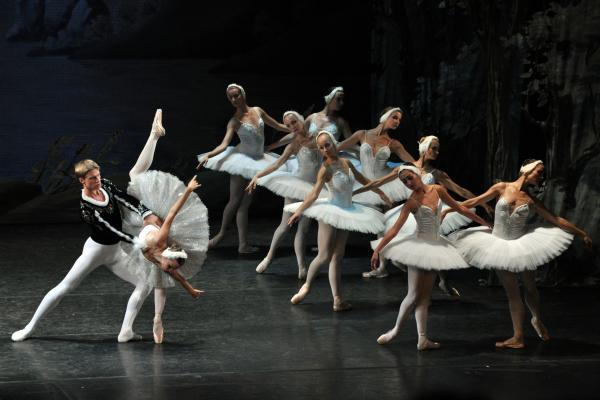
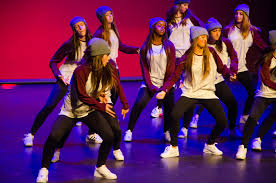
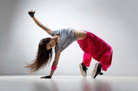

Estos son los deportes que he realizado y de los que voy a hablar a continuación:
- Ballet
- Hip hop
- Dance urban
El ballet es una de las danzas más famosas que cuenta con su propia partida de nacimiento: el 15 de octubre de 1581, en la ciudad francesa de Versalles.
Durante el reinado de Luis XIV, apodado Rey Sol surge la necesidad de la profesionalización y en 1661 se crea la primera escuela de baile:
la Académie Royale de la Dance.
Existen diversos tipos de ballet, desde el ballet clásico donde destacan importantes obras y modalidades regionales, como el ballet ruso,
el ballet francés o el ballet inglés, hasta el ballet neoclásico o moderno.
Uniforme para la clase de ballet clásico.
El uniforme para las alumnas es: leotardo, mallas, zapatillas y falda de ballet.

La cultura Hip Hop nació en los setenta en barrios de Nueva York poblados por habitantes afroamericanos como el Bronx y el Harlem.
Estos son los tipos de baile hip hop:
- Breaking
- Locking
- Popping
- Comercial
Se suele usar ropa deportiva, "oversize"

El Urban dance es un estilo de baile urbano y latino que fusiona el reggaeton con el hip hop.

· Pincha aquí para volver